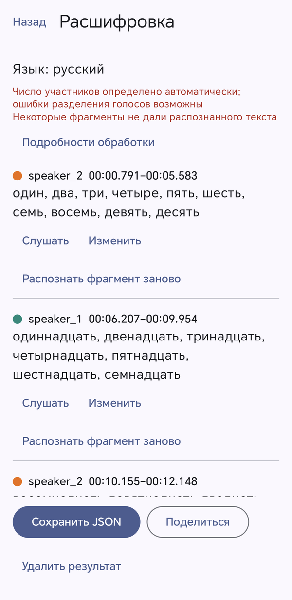

Речь становится
текстом.
Прямо на телефоне.
Разговоры на русском и английском — в реплики с участниками и таймкодами. Прослушайте, исправьте, сохраните. После загрузки моделей сеть не нужна.
Honor 200, Android 16. Один прогон в debug-инструментации. Это функциональная проверка, не измерение WER/DER. Методика →
Настоящее приложение. Настоящий запуск.
01 / ДемонстрацияЗапись экрана Honor 200 с отключённой сетью: подготовленные модели, обработка, редактирование и экспорт. Вычисления происходят на телефоне.
Запись или файл
Микрофон, PCM16 WAV и поддерживаемые Android аудиоконтейнеры. Единая временная шкала 16 кГц mono.
Реплики с участниками
Локальные ASR и диаризация. По выбору — шумоподавление, разделение голосов и пунктуация.
Текст под вашим контролем
Воспроизведение фрагмента, ручные правки, повтор одной реплики и экспорт структурированного JSON.
От модели
до исправленной реплики
Модели загружаются с проверкой SHA-256. В результате видны предупреждения, временные границы и фактически использованные вычислители.
Настоящая расшифровка; метки дикторов не являются идентификацией личности.
Пошаговая инструкция →
Один локальный конвейер
02 / АрхитектураKotlin и Jetpack Compose для интерфейса. Foreground service для обработки. Sherpa-ONNX, ONNX Runtime и GGML/llama.cpp для моделей.
Декодирование, mono 16 кГц, исходные временные границы.
GTCRN по выбору. Pyannote/TitaNet либо Nemotron.
Whisper tiny для «Авто». VoxLock при включённом разделении.
Распознавание реплик: русский / английский.
Локальная пунктуация. Изменения слов и чисел отклоняются.
Атомарное сохранение, редактирование и экспорт.
Измерения с проверяемым происхождением
03 / Тесты8 ноября 2026 · Honor 200 · Android 16 · код приложения 6a445ae. Все приведённые модельные стадии фактически работали на CPU.
Русский фрагмент · 15,125 с
Полный проход: 14,179 с с накладными расходами. RTF 0,937. Один debug-прогон; не benchmark optimized APK.
| Проверка | Наблюдение |
|---|---|
| 223 JVM-теста | Все прошли, 0 пропусков |
| Android Lint | 0 ошибок; предупреждения описаны |
| Английский диалог, 60 с | 109,805 с; Whisper + Nemotron |
| Повтор реплики | 6,227 с; остальные реплики сохранены |
| Тишина, 3 с | Пустой результат |
| 2000 реплик в UI | 10 открытий результата; функциональная проверка |
WER/DER, батарея и длительный нагрев не измерялись. Число найденных дикторов не доказывает корректность диаризации.
Методика, отказы и машинные отчёты →CPU, GPU и NPU — только по фактическому исполнению.
На Honor 200 Vulkan возвращал ошибки, аппаратный NNAPI-драйвер не обнаружен. Для Qwen и Nemotron используется CPU. Путь Pixel 9 Pro сохранён, но повторно при переносе не измерялся. MediaTek не проверен на физическом устройстве.
Всё для проверки решения
04 / Материалы сдачиAPK опубликован в Releases. Исходники, документация, результаты тестов и видео хранятся в Git-репозитории; все семь материалов доступны по ссылкам ниже.
Сайт, видео и отчёты доступны без авторизации. Исходный код и APK в GitHub Releases пока приватные: для скачивания APK и просмотра исходников нужен доступ к репозиторию от владельца.
Что важно учитывать
Речь требует проверки
Короткие реплики, шум и наложение голосов могут ухудшать ASR и диаризацию. Пунктуация не исправляет ошибочно распознанные слова.
Подготовка нужна заранее
Веса скачиваются отдельно. До обработки проверьте, что все выбранные модели готовы; сервис распознавания их не загружает.
Пределы телефона реальны
До 30 минут аудио с дополнительным ограничением по памяти. Скорость зависит от устройства, драйверов и нагрева.
Воспроизводимая сборка
Из корня репозитория, с настроенными JDK 17 и Android SDK. Все зависимости →
export VULKAN_SDK="$PWD/artifacts/build/vulkan-tools/usr" ./scripts/prepare-nnapi.sh && ./scripts/prepare-vulkan-tools.sh && ./scripts/build.sh :app:assembleOptimized